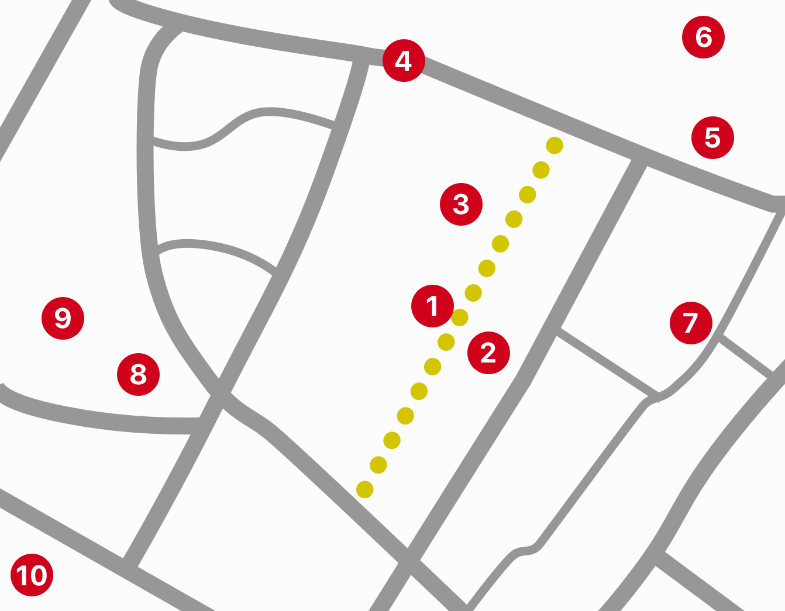

Walled cities, walled gardens. Tucked away in the lower corner of the Marais (swamp) sits a fossil, excavated from the substrate around it. Monotone, ominous, and regal, it holds back a pack of dwellings that lurch towards the gravel sportsfield below. It acts as a barrier, a support structure, and as a unit that appears to hold back the weight of the oncoming world. What was once the forbidden, outside world that it shoelded against, it now defends.

- 1. The Wall
- 2. Terrain de sport des jardins Saint-Paul
- 3. Lycée Charlemagne(School, uses sports grounds)
- 4. Rue Charlamagne, bisects wall, leads to closest Metro (Saint-Paul)
- 5. Fontaine du Lycée Charlemagne, constructed 1840
- 6. Eglise Saint-Paul-Saint-Louis, constructed 1627-1641
- 7. Antique shops along Rue Saint-Paul ("Le Village Saint Paul")
- 8. Hôtel de Sens, one of the best examples of hisotrical gothic hôtels in Paris, now remodeled and a library
- 9. Jardin de l'Hôtel de Sens
- 10. South towards Seine
*Note many of thse assessments come from two visits, both during the week around 2pm. Further explorations should be done to determine if time is causul or correlative of the demographic.
- Younger secondary school students playing sport – primarily male
- That Person
- Gates to sportsgrounds appeared locked. I spent a long time exploring for an entrance (people were in the park) before stumbling accross the scene below..
- People playing sport in off hours
- Balls hitting wall – is this damaging? Do the people in the park know the significance of the wall on their side?
- Some people were playing sport in the street (Rue des Jardins Saint Paul)
- Minor construction on the shop side of Rue des Jardins Saint Paul

Colin Jones argues that the Philip Augustus wall was built to keep people in the cities, developing parts of Paris that were within the walls rather than creating urban sprawl. I found it interesting how the grounds in front of the wall have their own 'fortifications' and walls, with fencing keeping people out – and in!
This obstruction of the land is an area I want to explore more of; the movement of people along and around the wall. How walls are built, and their ripple effects throughout society and time.